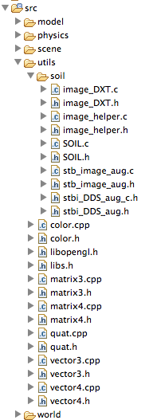
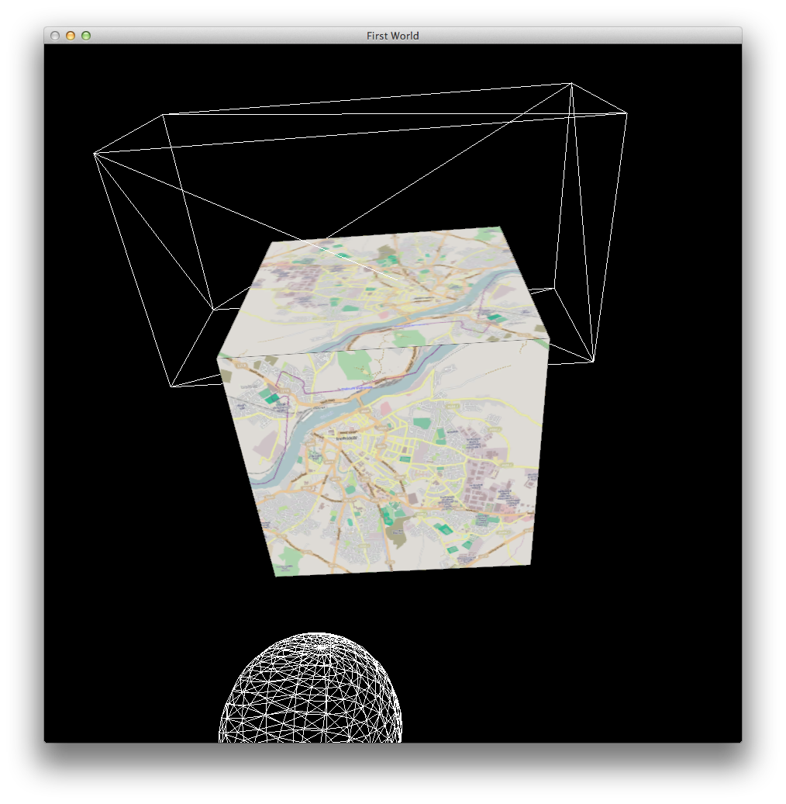
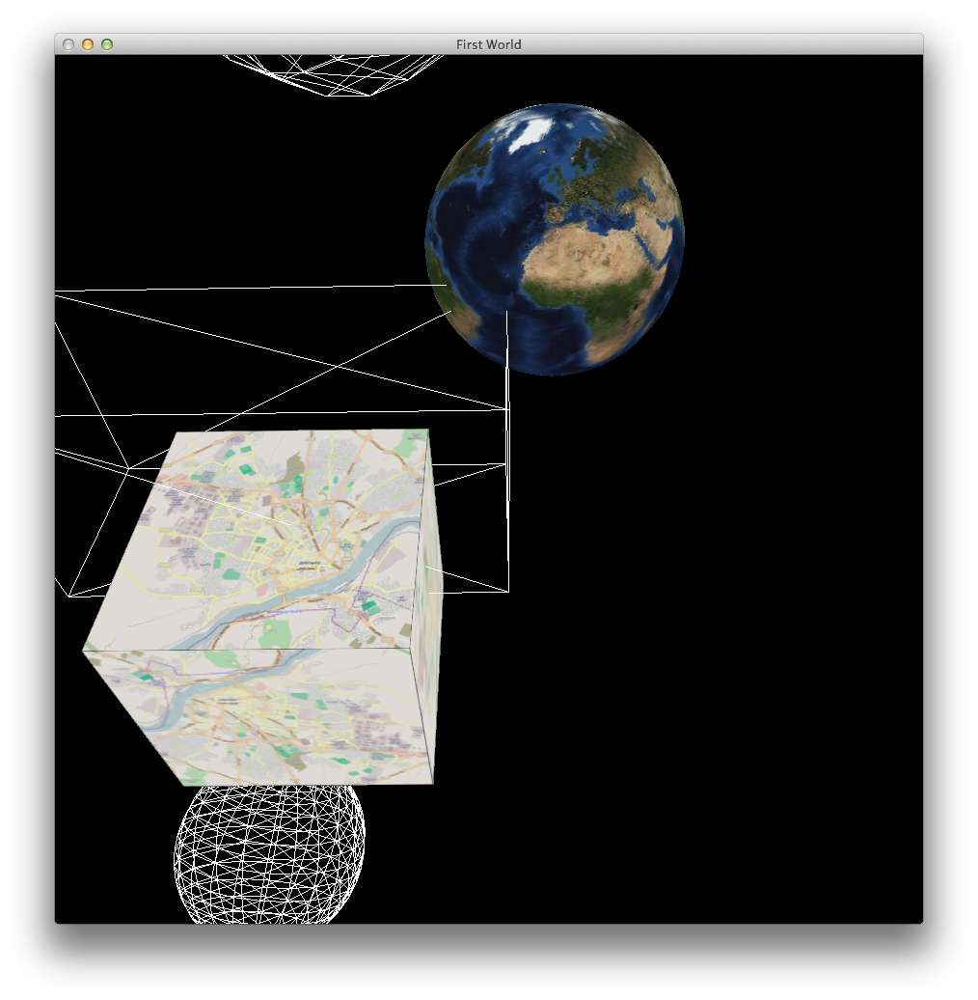
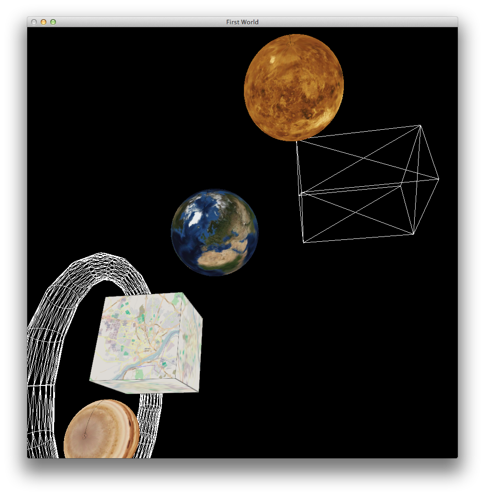

Incorporate image based textures onto the surface of some actors.
Using the Soil open source opengl imaging library:
Load images onto the faces of a cube
Define a sphere using OpenGL Quadrics - and map a planetary surface onto it such that it is not distorded
As an exercise, explore loading multiple images/textured onto a singe cube
Use the output of the last lab, or clone this project here:
Call the project lab12b_texture
OpenGL does not address image formats, as they are beyond its remit. This library here:
http://lonesock.net/soil.html
provides a usable framework for importing a range of image file formats into opengl. Download the source from here:
http://www.lonesock.net/files/soil.zip
and unzip somewhere convenient.
Create a folder inside the 'util' folder in your project.
Drag and drop the contents of the 'src' folder from the SOIL library into this folder - excluding the test file. Your workspace may look like this:

Rebuild the project.
On Windows - it should build successfully (famous last words). On mac you will need on adjustment: Add
-framework CoreFoundation
..to the linker
Build - the application should compile and link successfully.
#pragma once
#include "actor.h"
struct ImageCube: public Actor
{
ImageCube();
void render();
};
#include "libs.h"
#include "imagecube.h"
using namespace std;
Vector3 thevertices[][6] =
{
{ Vector3(-1.0f, 1.0f, 1.0f), Vector3(-1.0f, -1.0f, 1.0f), Vector3( 1.0f, -1.0f, 1.0f), Vector3( 1.0f, 1.0f, 1.0f) },
{ Vector3( 1.0f, 1.0f,-1.0f), Vector3( 1.0f, -1.0f,-1.0f), Vector3(-1.0f, -1.0f,-1.0f), Vector3(-1.0f, 1.0f, -1.0f) },
{ Vector3(-1.0f, 1.0f,-1.0f), Vector3(-1.0f, 1.0f, 1.0f), Vector3( 1.0f, 1.0f, 1.0f), Vector3( 1.0f, 1.0f, -1.0f) },
{ Vector3( 1.0f,-1.0f,-1.0f), Vector3( 1.0f, -1.0f, 1.0f), Vector3(-1.0f, -1.0f, 1.0f), Vector3(-1.0f,-1.0f, -1.0f) },
{ Vector3( 1.0f,-1.0f, 1.0f), Vector3( 1.0f, -1.0f,-1.0f), Vector3( 1.0f, 1.0f,-1.0f), Vector3( 1.0f, 1.0f, 1.0f) },
{ Vector3(-1.0f, 1.0f, 1.0f), Vector3(-1.0f, 1.0f, -1.0f), Vector3(-1.0f, -1.0f,-1.0f), Vector3(-1.0f, -1.0f, 1.0f) }
};
void drawFace(Vector3 vertices[])
{
vertices[0].render();
vertices[1].render();
vertices[2].render();
vertices[3].render();
}
ImageCube::ImageCube()
{
}
void ImageCube::render()
{
glPolygonMode(GL_FRONT,GL_FILL);
glBegin( GL_QUADS);
for (int i=0; i<6; i++)
{
drawFace(thevertices[i]);
}
glEnd();
glPolygonMode(GL_FRONT,GL_LINE);
}
actorName = "imagecube";
actors.insert(actorName, new ImageCube());
GLuint loadTexture(std::string filename);
GLuint loadTexture(string filename)
{
GLuint tex_ID = SOIL_load_OGL_texture
(filename.c_str(), SOIL_LOAD_AUTO, SOIL_CREATE_NEW_ID,
(SOIL_FLAG_MIPMAPS | SOIL_FLAG_INVERT_Y |
SOIL_FLAG_NTSC_SAFE_RGB | SOIL_FLAG_COMPRESS_TO_DXT) );
return tex_ID;
}
You will need to include soil.h, and place the soil library on the include path.
Verify that the project builds.
In the class ImageLoad, introduce a handle for an image we are going to load:
struct ImageCube: public Actor
{
int imageID;
//...
}
Incorporate this image file into your project (place it on the path in the root of the project alongside the model files)
and in the constructor, load the image using the Soil library:
ImageCube::ImageCube()
{
imageID = loadTexture("city.png");
}
With the image loaded, we can attempt to bind the texture to the faces of the cube.
This is carried out by enabling texture support, calling glBindTexture with the image id, and then rendering as normal.
void ImageCube::render()
{
glPolygonMode(GL_FRONT,GL_FILL);
glEnable(GL_TEXTURE_2D);
glBindTexture(GL_TEXTURE_2D, imageID);
glBegin( GL_QUADS);
for (int i=0; i<6; i++)
{
drawFace(thevertices[i]);
}
glEnd();
glDisable(GL_TEXTURE_2D);
glPolygonMode(GL_FRONT,GL_LINE);
}
We disable texturing at the end of the render.
Build and test.
You will notice that our image fails to appear. This is because the bind of the texture relies on a mapping from texture co-ordinates to the vertex space as defined by our co-ordinate geometry.
For each vertex, we output a texture co-ordinate, which indicates which aspect of the loaded texture is to be loaded mapped at the given vertex.
We would like the entire image to be loaded onto each face - hence we define the following texture coordinates:
void drawFace(Vector3 vertices[])
{
glTexCoord2f(0.0, 0.0);
vertices[0].render();
glTexCoord2f(0.0, 1.0);
vertices[1].render();
glTexCoord2f(1.0, 1.0);
vertices[2].render();
glTexCoord2f(1.0, 0.0);
vertices[3].render();
}

This is a jpeg of an image of the earth:
Note that it has been 'distorted' - that is it is structured such that it will map correctly to a sphere, if the texture co-ordinates are suitably defined.
Incorporate the following class into your scene folder:
#pragma once
#include "actor.h"
struct Sphere: public Actor
{
int imageID;
Sphere();
void render();
};
#include "libs.h"
#include "sphere.h"
#include "materials.h"
using namespace std;
Sphere::Sphere()
{
imageID = loadTexture("earth.jpg");
}
void Sphere::render()
{
glPolygonMode(GL_FRONT,GL_FILL);
glEnable(GL_TEXTURE_2D);
GLUquadric *qobj = gluNewQuadric();
gluQuadricTexture(qobj,GL_TRUE);
glBindTexture(GL_TEXTURE_2D, imageID);
glPushMatrix();
Vector3(2,2,2).translate();
gluSphere(qobj,1,50,50);
glPopMatrix();
gluDeleteQuadric(qobj);
glPolygonMode(GL_FRONT,GL_LINE);
glDisable(GL_TEXTURE_2D);
}
This will draw a sphere, using the Glu Quadric functions:
http://en.wikipedia.org/wiki/Quadric
http://nehe.gamedev.net/tutorial/quadrics/20001/
In particular, note that we are generating unit texture mapping for the sphere:
gluQuadricTexture(qobj,GL_TRUE);
glBindTexture(GL_TEXTURE_2D, imageID);
glPushMatrix();
Vector3(2,2,2).translate();
gluSphere(qobj,1,50,50);
glPopMatrix();

struct Sphere: public Actor
{
int imageID;
Vector3 position;
Sphere(Vector3 position, std::string imagefile);
void render();
};
Sphere::Sphere(Vector3 position, string imagefilename)
: position (position)
{
imageID = loadTexture(imagefilename);
}
void Sphere::render()
{
//...
glPushMatrix();
position.translate();
gluSphere(qobj,1,50,50);
glPopMatrix();
//..
}
actorName = "earth";
actors.insert(actorName, new Sphere(Vector3(2,2,2), "earth.jpg"));
This site here provides a range of planetary images - suitably mapped:
http://planetpixelemporium.com/planets.html
Bring in a few images - and create associated sphere objects... a scene like this should be easy to create:

Try to load a different image onto each face of the cube.
NB: Textures behave very differently if bound inside glBegin()/glEnd() than if they are bound outside. For this to work, you will have to bind each image before entering immediate mode. This will require a slightly more verbose ImageCube class
How about have the same image rendered repeatedly over one side of a cube? This would require you to generate appropriate texture co-oridnates
Saturn is more interesting:
http://planetpixelemporium.com/saturn.html
The sphere itself is simple, but how would you map the rings? Note that there is a separate image file provided for this.
{kind=link}
{kind=link}